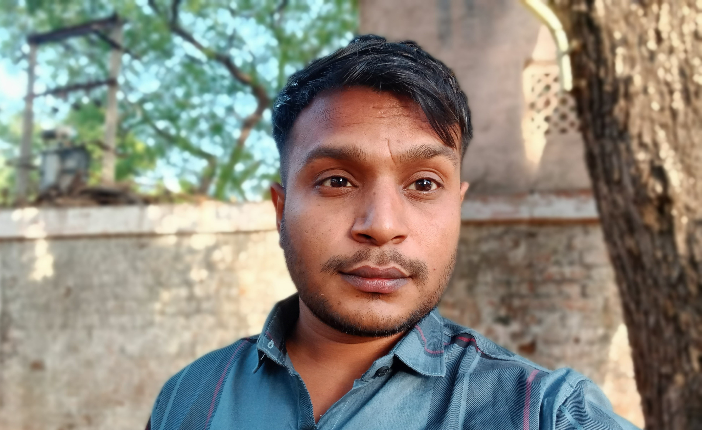

Contact : nitingamechi@gmail.com
LinkedIn : https://in.linkedin.com/in/nitingamechi
GitHub : https://github.com/GamechiNitin
|  | Experienced Software (Flutter) developer with a strong background in computer engineering & 2 years of experience building high-performance, cross-platform mobile apps. Highly proficient in communication, collaborative work, problem-solving, adaptability, attention to detail. Having knowledge of Flutter, Dart |
May 2022 - Jan 2023 [ 8 months]
Responsible for creating and developing high-performance, cross-platform mobile applications for Android and IOS using Flutter and Dart framework. Participated in code reviews to ensure the quality and maintainability of the code-base. Throughout whole app development process from design to implementation and publishing it
Virtual Signature, Push Notification, GoogleAuto-complete, Web Payment, Dynamic Theme, CustomFonts,Multiple App Language Localization
Flutter & Dart, Fire-base, API, GoogleAPI
AppLinkMarch 2021 - April 2022 [ 14months]
To deliver high quality, responsive, clean-clear code and maintainable app. Collaboration with the design team to implement pixel-perfect, clean, modern rich user experience(UI/UX). Incorporated unit testing to ensure app quality and stability. The ability to produce high-quality code and catch errors early in the development process. Developed and maintained a mobile application using Object-oriented programming concepts. Implemented REST API & third-party API integration to connect the mobile application to a server.
Developed and contributed in various application like E-commerce, Social Media, Grocery, Shoppingand Services Application
Flutter & Dart, Fire-base, API, GoogleAPI
AppLinkBuy, Share and Rent toy's using the app.
Hosted Link : https://play.google.com/store/apps/details?id=com.sharepoint
Short video social media app
Hosted Link : https://play.google.com/store/apps/details?id=com.biebol
Grossery shopping app
Hosted Link : https://play.google.com/store/apps/details?id=com.greenturtle
Tercardia SmartDoc App will place your physicians in the palm of your hand 24/7
Hosted Link : https://play.google.com/store/apps/details?id=com.tercardia.smartdoc
Cricket sports app
Hosted Link : https://play.google.com/store/apps/details?id=com.priorware.priorcric
Community social media app
Hosted Link : https://play.google.com/store/apps/details?id=com.story1860.app&hl=en&gl=US
Vasad - Gujarat - India
Profession experience is 1 years 10 months [2 years]
Yes - Only [ Banglore, Pune, Mumbai, Vadodara ]
Bachelor’s degree in Computer Engineering : Sardar Vallabhbhai Patel Institute of Technology - SVIT Vasad [ 2015 - 2019 ]